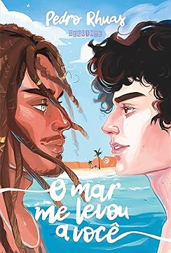
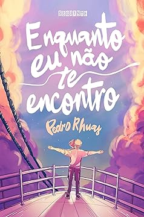
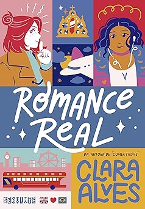
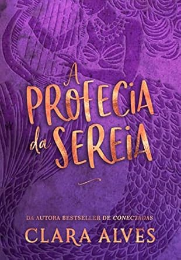

|
Pedro Rhuas
Pedro Rhuas, natural do Rio Grande do Norte e Ceará, é escritor, jornalista e
cantor. Seu romance de estreia, Enquanto eu não te encontro (2021), tornou-se
best-seller, consolidando-o como uma nova voz da literatura jovem brasileira. Em
2023, ele lançou O Universo sabe o que faz e o romance O mar me levou a você. Rhuas
também é conhecido pelo seu álbum Contador de História, com mais de 500 mil
reproduções no Spotify. |
Temas que aborda:
- Amor à primeira vista
- protagonismo LGBTQIAP+
- identidade nordestina
- Romance jovem adulto
|
Títulos Principais:


|
|
|
|
Clara Alves
Clara Alves, apaixonada por livros desde jovem, estudou jornalismo e trabalhou no
mercado editorial antes de se dedicar integralmente à escrita. Autora do best-seller
Conectadas (2019), que já vendeu mais de 100 mil exemplares, ela também publicou
Romance Real (2022), traduzido para o inglês como London On My Mind. Vive no Rio de
Janeiro e é conhecida por seus romances clichês LGBTQIAP+ que aquecem o coração.
|
Temas que aborda:
- Romance LGBTQIAP
- Autodescobertas
- Vivências Adolescentes
|
Títulos Principais:


|
|